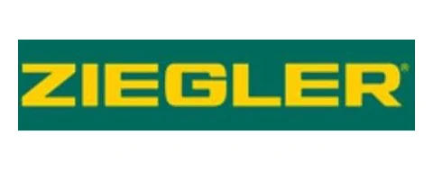
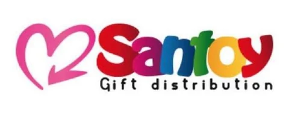
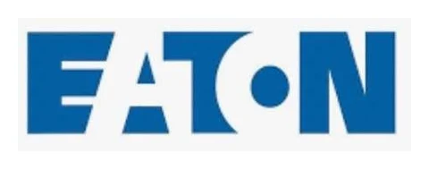

In short: POS logistics means receiving a campaign’s promotional material, turning it into ready-to-install kits and delivering it to every store on launch date. In Casablanca, Tecxodus runs at 180–224 pieces per hour per person and has scaled a campaign to 100,000 pieces per day.
A local 3PL partner for international brands in Morocco
Global and regional teams launching trade marketing campaigns in Morocco need a partner that applies their standards without supervision on site. Tecxodus works for international groups such as Eaton, STILL, Systemair, Ziegler and Miroglio Group, and prepares campaigns for the country’s main retail chains: Marjane, Carrefour, BIM and Kazyon.
POS operations we handle
- Receiving and inspection: unloading, counting by SKU and version, discrepancy reporting before launch.
- Campaign storage: 100 to 20,000 m², stock tracked in the client WMS.
- Kitting and assembly: store kits, promotional gift boxes, display assembly.
- Bundling: grouping products and material according to the campaign bill of materials.
- Labelling and relabelling: labels by store, version or language; correction of non-compliant labels.
- Store-by-store distribution: shipments prepared per point of sale, packing lists, shipment tracking.
- Leftovers: count, storage for the next campaign, return or destruction on client decision.
- Custom operations: scope follows the campaign. We also apply Amazon preparation and labelling standards, common in Europe and the UK but still rare in Morocco.


Standards for multinational requirements
| Standard | How Tecxodus applies it |
|---|---|
| GS1 (EAN-13, GS1-128, SSCC) | Product barcodes, logistics labels and SSCC pallet labels compliant with retail requirements |
| Amazon preparation standards | Preparation, packaging and labelling methods used in Europe and the UK |
| Retail chain specifications | Packing, labelling and store-level preparation to Marjane, Carrefour, BIM and Kazyon rules |
| EUR/EPAL and UK pallets | 1200 × 800 mm and 1200 × 1000 mm pallets, plus oversized loads |
| Incoterms® 2020 | Inbound imports coordinated with your freight forwarder according to the contract Incoterm |
| AQL quality control (ISO 2859-1) | Sampling inspection at the level set by your quality team |
| Client SOPs and audits | Your work instructions applied at every station; site visits and audits on request |
| WMS traceability | Stock tracked by SKU, version and lot; client WMS access and camera access depending on account |
| Confidentiality | NDA signed on request for pre-launch material |
Does your group require a specific certification or framework? Tell us in the brief and we check compliance before quoting.
Example: 100,000 pieces per day for Marjane stores
For a campaign rolled out across the Marjane network, the client had to supply every store within a short window. At the client’s request, Tecxodus scaled production to 100,000 pieces per day: receiving, store kitting, labelling and shipment preparation.
To size your own campaign, start from the rate. At 180 pieces per hour per person, 10,000 pieces take about 56 labour hours; at 224, about 45. 100,000 pieces in one day therefore need 450 to 560 labour hours, or 56 to 70 people on an 8-hour shift.
Clients who trust us with POS operations
These clients have run POS operations with Tecxodus. Logos published with their permission.







Pricing: Moroccan market benchmarks
| Item | Market benchmark | Unit |
|---|---|---|
| Class A warehouse rental, Casablanca | MAD 55–80 | per m² per month |
| E-commerce logistics storage, Morocco | MAD 40–80 | per m² per month |
| Order picking | MAD 5–15 | per parcel |
| Kitting, assembly, labelling | time-based | hourly cost ÷ rate (180–224 pieces/h per person) |
Sources: maroctl.com, clarodigi.com, accessed 18/11/2026. Indicative market figures, not Tecxodus rates.
What to send for a quote
- a sample or the kit bill of materials (components, quantities, versions);
- number of pieces and stores, with the destination list;
- material arrival date and in-store launch date;
- required operations: kitting, assembly, bundling, labelling, shipping;
- your standards: labelling spec, SOPs, AQL level, reporting;
- planned handling of leftovers.
Frequently asked questions
What does POS logistics in Morocco cost?
Pricing depends on the operation: storage, kitting, assembly, labelling or store-by-store shipping. Tecxodus quotes each campaign from a sample or a pilot run. Published market benchmarks: MAD 55–80 per m² per month for Class A warehousing in Casablanca, MAD 5–15 per order picked.
What throughput can Tecxodus deliver on a POS campaign?
Measured rates on live operations are 20 pallets per hour per person for handling and 180–224 pieces per hour per person depending on the task. One retail campaign for Marjane stores reached 100,000 pieces per day at the client’s request.
Do you work with multinational companies?
Yes. International groups such as Eaton, STILL, Systemair, Ziegler and Miroglio Group entrust operations to Tecxodus. We apply their procedures, labelling standards and reporting requirements.
Which labelling standards do you apply?
GS1 standards (EAN-13, GS1-128, SSCC pallet labels), Amazon preparation standards, and the requirements of Moroccan retail chains: Marjane, Carrefour, BIM and Kazyon.
Can you follow our SOPs and accept a quality audit?
Yes. Your SOPs are applied at every workstation, quality control can follow an AQL sampling plan (ISO 2859-1), and your team can visit or audit the site.
How can a regional or European HQ follow the campaign remotely?
Every client gets WMS access to track stock and order preparation, plus camera access depending on the account set-up.
Which retail chains in Morocco do you prepare campaigns for?
Tecxodus prepares POS campaigns for Marjane, Carrefour, BIM and Kazyon stores, with kits and shipments prepared store by store.
How much space can you allocate?
From 100 m² to 20,000 m², in Aïn Sebaâ (Softpark / Soft Logistic, Casablanca). Operations can also run on the client’s own site.
What happens to leftover POS material?
Leftovers are counted, stored by reference and tracked in the WMS. The client then decides: keep for the next campaign, return or destroy.